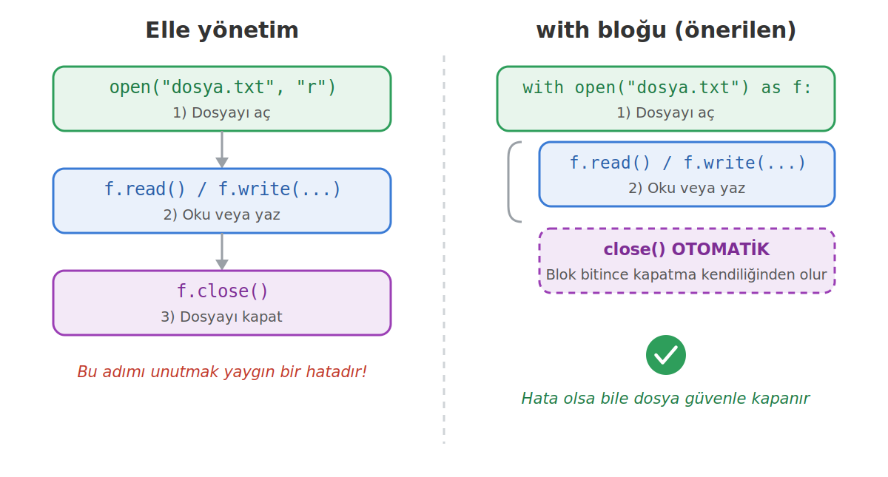
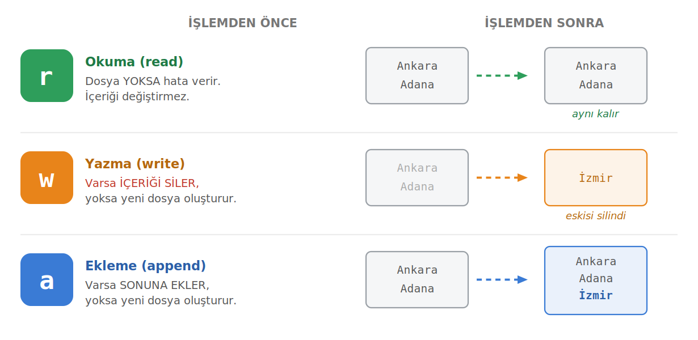
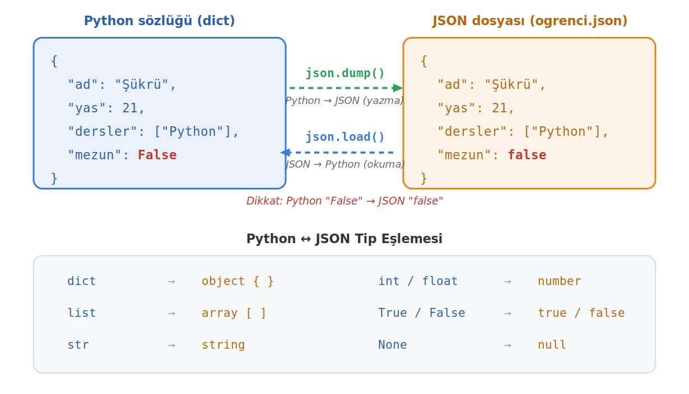

Python'da Dosya İşlemleri
Bir değişken yalnızca program çalıştığı sürece bellekte durur; program kapandığında her şey silinir. Bu sayfa veriyi diske kalıcı olarak yazmayı, geri okumayı, with bloğunu ve yapılı veri için JSON kullanmayı anlatır.
Bu sayfada
1Dosya işlemleri neden vardır?
Şimdiye kadar yazdığımız programlarda verileri değişkenlerde tuttuk. Ama bir değişken yalnızca program çalıştığı sürece bellekte (RAM) durur; program kapandığında her şey silinir. Bir sonraki çalıştırmada kullanıcı bilgileri, oyun skorları ya da hesaplanan sonuçlar yok olmuştur. Veriyi kalıcı bir yere yazmamız gerekir; işte bu noktada dosyalar devreye girer.
Bir dosya bize başlıca üç şey kazandırır. İlki kalıcılıktır: program kapansa, hatta bilgisayar yeniden başlasa bile dosyaya yazdığınız veri yerinde durur. İkincisi veri paylaşımıdır: bir programın ürettiği dosyayı bambaşka bir program okuyabilir. Üçüncüsü ise büyük veriyle çalışabilmektir: belleğe sığmayacak kadar büyük verileri parça parça dosyadan okuyabilirsiniz.
| Bellek (Değişkenler) | Dosya (Disk) | |
|---|---|---|
| Kalıcılık | Program kapanınca silinir | Kalıcıdır, silinmez |
| Hız | Çok hızlı | Daha yavaş |
| Kapasite | Sınırlı (RAM kadar) | Çok büyük olabilir |
| Kullanım | Geçici hesaplamalar | Saklanması gereken veriler |
Defteri açmak open(), bir şeyler yazmak write(), yazılanları okumak read(), defteri kapatmak ise close() demektir. Aklınızda tuttuğunuz bir telefon numarasını unutursunuz; ama deftere yazarsanız yıllar sonra bile okuyabilirsiniz. RAM "akıl", dosya ise "defter" gibidir.
2Dosya açma: open()
Bir dosyayla çalışmadan önce onu açmamız gerekir. Bunun için yerleşik open() fonksiyonunu kullanırız: open("dosya_adi.txt", "mod", encoding="utf-8"). Birinci parametre açılacak dosyanın adı ya da yolu, ikincisi dosyayı ne amaçla açtığımızı belirten mod, üçüncüsü ise Türkçe karakterlerin doğru işlenmesini sağlayan encoding ayarıdır. open() bize bir dosya nesnesi döndürür; bütün okuma ve yazma işlemlerini bu nesne üzerinden yaparız.
dosya = open("notlar.txt", "w", encoding="utf-8") # dosyayı yazma modunda aç
dosya.write("Merhaba dünya") # içine yaz
dosya.close() # dosyayı kapat
Bu üç adım (aç, işle, kapat) bütün dosya işlemlerinin temelidir.

Soldaki elle yönetim yönteminde close()'u biz çağırırız ve bunu unutmak çok yaygın bir hatadır. Sağdaki with bloğu ise kapatmayı bizim yerimize otomatik yapar; bu yüzden modern Python'da tercih edilen yöntemdir.
3Dosya modları
open() fonksiyonuna verdiğimiz mod, dosyayla ne yapacağımızı belirler. En sık kullanılan üç mod şunlardır:
| Mod | Adı | Ne yapar | Dosya yoksa |
|---|---|---|---|
"r" | read (okuma) | Dosyayı okur, değiştirmez | ❌ Hata verir (FileNotFoundError) |
"w" | write (yazma) | Yazar; dosya varsa içeriğini siler | ✅ Yeni dosya oluşturur |
"a" | append (ekleme) | Var olan içeriğin sonuna ekler | ✅ Yeni dosya oluşturur |

r, w ve a modlarının dosya üzerindeki etkisiGörsel en kritik ayrımı gösterir: "w" modu mevcut içeriği tamamen siler, "a" modu ise korur ve sonuna ekler.
# Önce "w" ile yazalım with open("test.txt", "w", encoding="utf-8") as f: f.write("birinci\n") # Tekrar "w" ile açarsak ÖNCEKİ İÇERİK SİLİNİR with open("test.txt", "w", encoding="utf-8") as f: f.write("ikinci\n") # Dosyada artık sadece "ikinci" var, "birinci" silindi! # "a" ile açarsak SONUNA EKLENİR with open("test.txt", "a", encoding="utf-8") as f: f.write("ucuncu\n") # Dosyada artık: "ikinci" ve "ucuncu"
"w" modunu var olan bir dosyaya yanlışlıkla uygularsanız, içindeki tüm veriyi geri dönüşü olmadan silersiniz. Veri eklemek istiyorsanız "a" kullanın.
Bunların dışında bilgi olarak bilinmesi gereken modlar da vardır: "x" yeni dosya oluşturur ama dosya zaten varsa hata verir; "r+" hem okuma hem yazmaya izin verir; "rb" ve "wb" ise resim, ses, video gibi metin olmayan dosyalar için kullanılan ikili (binary) modlardır.
4Dosyaya yazma
write() metodu, verilen metni dosyaya yazar. Ancak print()'ten önemli bir farkı vardır: otomatik olarak alt satıra geçmez. Her yazıdan sonra alt satıra geçmek istiyorsak sonuna \n (yeni satır karakteri) eklemeliyiz.
with open("sehirler.txt", "w", encoding="utf-8") as f:
f.write("Ankara")
f.write("Adana")
# Dosyada: AnkaraAdana (yan yana!)
with open("sehirler.txt", "w", encoding="utf-8") as f:
f.write("Ankara\n")
f.write("Adana\n")
# Dosyada: Ankara ve Adana (alt alta)
Bir listenin tüm elemanlarını tek seferde yazmak için writelines() kullanılır; ancak bu metot da \n eklemez, satır sonlarını biz koymalıyız. Var olan bir dosyanın sonuna ekleme yapmak istediğimizde ise dosyayı "a" modunda açarız; bu işlem eski satırları korur.
sehirler = ["Ankara\n", "Adana\n", "İzmir\n"]
with open("sehirler.txt", "w", encoding="utf-8") as f:
f.writelines(sehirler)
# Var olan dosyanın sonuna yeni satır ekle
with open("sehirler.txt", "a", encoding="utf-8") as f:
f.write("Mersin\n")
5Dosyadan okuma
Bir dosyayı okumanın birkaç farklı yolu vardır. Hangisini seçeceğiniz, dosyayı bütün olarak mı yoksa satır satır mı işlemek istediğinize bağlıdır. Aşağıdaki örneklerde dosyanın içeriğinin, bir önceki örnekte oluşturduğumuz Ankara, Adana, İzmir, Mersin satırları olduğunu varsayalım.
# read(): tümünü tek string olarak okur with open("sehirler.txt", "r", encoding="utf-8") as f: icerik = f.read() print(type(icerik)) # <class 'str'> # readline(): her çağrıda bir sonraki satırı okur with open("sehirler.txt", "r", encoding="utf-8") as f: print(f.readline().strip()) # Ankara print(f.readline().strip()) # Adana # readlines(): satırları liste olarak okur with open("sehirler.txt", "r", encoding="utf-8") as f: satirlar = f.readlines() print(satirlar) # ['Ankara\n', 'Adana\n', 'İzmir\n', 'Mersin\n']
Bir dosyayı satır satır işlemenin en temiz ve belleğe en dostça yolu ise dosya nesnesi üzerinde doğrudan döngü kurmaktır. Bu yöntem dosyanın tamamını belleğe yüklemez, satırları tek tek alır; bu yüzden çok büyük dosyalarda bile güvenle çalışır.
with open("sehirler.txt", "r", encoding="utf-8") as f:
for satir in f:
print(satir.strip()) # strip() satır sonundaki \n'i temizler
Ankara Adana İzmir Mersin
| Metot | Ne döndürür | Ne zaman kullanılır |
|---|---|---|
read() | Tek string (tüm dosya) | Dosya küçük ve tümünü birden işleyeceksek |
readline() | Tek satır (string) | Satırları teker teker, kontrollü okumak istiyorsak |
readlines() | Satırların listesi | Satırlara liste gibi (indeksle) erişmek istiyorsak |
for satir in f | Her turda bir satır | Çoğu durumda en iyisi; büyük dosyalarda da güvenli |
6with bloğu (bağlam yöneticisi)
Bir dosyayı açtıktan sonra kapatmazsak sorunlar çıkar: yazdığımız veri diske tam olarak kaydedilmeyebilir, dosya başka programlar tarafından kilitli kalabilir ve sistem kaynakları boşa harcanır. Klasik yöntemde kapatmayı biz hatırlamalıyız; with bloğu ise blok bittiğinde dosyayı otomatik olarak kapatır.
# Elle yönetim f = open("notlar.txt", "w", encoding="utf-8") f.write("merhaba") f.close() # ← unutulması çok kolay! # with bloğu with open("notlar.txt", "w", encoding="utf-8") as f: f.write("merhaba") # Blok bitti → dosya otomatik kapandı
Üstelik blok içinde bir hata oluşsa bile dosya yine de güvenle kapatılır. Bu davranış, hata yönetimindeki finally bloğunun yaptığı işin aynısıdır: with, bunu bizim için arka planda halleder. Blok içinde istediğimiz kadar okuma ve yazma işlemi yapabiliriz.
İki dosyayla aynı anda çalışmak gerektiğinde (örneğin birinden okuyup diğerine yazmak), hepsini tek with satırında virgülle açabiliriz:
with open("tek.txt", "a", encoding="utf-8") as tek, \
open("cift.txt", "a", encoding="utf-8") as cift:
for sayi in range(1, 101):
if sayi % 2 == 0:
cift.write(str(sayi) + "\n")
else:
tek.write(str(sayi) + "\n")
Buradaki ters bölü (\) satırı bir alt satırda sürdürmek içindir; iki dosya da blok bitince otomatik kapanır.
Özel bir nedeniniz yoksa dosya işlemlerini her zaman with ile yapın. Hem daha kısa, hem daha güvenli, hem de close() unutma riskini ortadan kaldırır.
7Dosya imleci: seek, tell ve r+ modu
Bir dosyayı okurken Python, dosyanın neresinde olduğumuzu takip eden bir imleç (cursor) tutar. Tıpkı bir kitabı okurken parmağınızın bulunduğu yer gibi: her okuma, imleci ileri taşır. tell() imlecin o anki konumunu döndürür, seek(offset) ise imleci istediğimiz konuma götürür. En sık kullanımı seek(0)'dır: imleci dosyanın başına döndürür.
with open("sehirler.txt", "r", encoding="utf-8") as f:
icerik = f.read() # tüm dosyayı oku → imleç SONA gitti
print(f.read()) # '' (boş! çünkü imleç sonda)
f.seek(0) # başa dön
print(f.read()) # tekrar tüm içerik
Bir dosyayı read() ile baştan sona okuduğunuzda imleç sonda kalır; tekrar okumak isterseniz önce seek(0) ile başa dönmelisiniz. Bu, yeni başlayanların "neden ikinci read() boş döndü?" sorusunun cevabıdır.
"w" modu dosyayı silip baştan yazar, "a" yalnızca sona ekler. Peki bir dosyanın başına ya da ortasına ekleme yapmak istersek? Bunun için içeriği silmeden hem okumaya hem yazmaya izin veren "r+" modunu kullanırız. İzlenecek yöntem üç adımdır: oku → bellekte değiştir → başa dönüp geri yaz.
# Dosyanın başına ekleme with open("kisiler.txt", "r+", encoding="utf-8") as f: icerik = f.read() # mevcut içeriği oku f.seek(0) # başa dön f.write("Derman Kaya\n" + icerik) # yeniyi öne koyup tümünü yaz # Dosyanın ortasına ekleme with open("kisiler.txt", "r+", encoding="utf-8") as f: satirlar = f.readlines() # ['Derman Kaya\n', 'Ali\n', 'Ayşe\n', ...] satirlar.insert(2, "Yeni Kişi\n") # 3. sıraya ekle (indeks 2) f.seek(0) f.writelines(satirlar) # listeyi geri yaz
tell() ve seek() bayt sayar, karakter değil; Türkçe karakterler UTF-8'de 2 bayt yer kaplar. Ayrıca "r+" ile geri yazarken yeni içerik eskisinden kısaysa dosyanın sonunda eski karakterlerden artıklar kalabilir; bunu önlemek için yazımdan sonra f.truncate() çağırabilirsiniz.
8Hata yönetimi ve Türkçe karakter
Dosya işlemleri başarısız olabilir: dosya yoktur, izniniz yoktur ya da disk doludur. Bu yüzden dosya kodları, hata yönetimi (try/except) ile çok iyi anlaşır. Var olmayan bir dosyayı "r" modunda açmaya çalışmak FileNotFoundError fırlatır:
try:
with open("olmayan.txt", "r", encoding="utf-8") as f:
print(f.read())
except FileNotFoundError:
print("Dosya bulunamadı.")
Alternatif olarak os modülüyle dosyanın var olup olmadığını açmadan önce de kontrol edebilirsiniz: if os.path.exists("sehirler.txt"):. Genel kural şudur: "önce kontrol et" yerine "dene, hata olursa yakala" çoğu zaman daha güvenlidir; çünkü kontrol ettiğiniz an ile dosyayı açtığınız an arasında dosya silinebilir. import, Python'un hazır araç dosyalarından (modüllerden) birini programa ekler; ayrıntısını 12. haftada göreceğiz.
Türkçe karakterler (ç, ğ, ı, ö, ş, ü ve büyük hâlleri) bazı sistemlerde bozuk görünebilir veya UnicodeDecodeError hatası verebilir. Çözüm, dosyayı açarken encoding="utf-8" belirtmektir.
# ✅ Doğru: Türkçe karakterler güvende with open("isimler.txt", "w", encoding="utf-8") as f: f.write("Şükrü, Çağla, Iğdır, Öztürk\n") # ⚠ Riskli: encoding belirtilmezse sistemin varsayılanına bağlı kalır with open("isimler.txt", "w") as f: f.write("Şükrü") # bazı Windows sistemlerinde sorun çıkabilir
Türkçe içerikli dosyalarda her zaman encoding="utf-8" kullanın. Bu, hem okurken hem yazarken alışkanlık hâline getirilmesi gereken bir ayardır.
9JSON dosyaları: yapılı veri saklama
Şimdiye kadar düz metin (.txt) dosyalarıyla çalıştık. Ama gerçek programlar genellikle yapılı veri saklar: bir öğrencinin adı, yaşı, aldığı dersler ve mezuniyet durumu hep birlikte. Ürün bilgilerini virgülle ayırıp .txt dosyasında tuttuğunuzu düşünün; okurken her satırı split(",") ile elle ayrıştırmanız gerekir, her şey string olur, bir alanın içinde virgül geçerse ayrıştırma bozulur ve iç içe veriyi saklamak neredeyse imkânsızdır.
JSON (JavaScript Object Notation), verinin insan tarafından okunabilir, yapılı ve dilden bağımsız bir biçimde saklandığı metin formatıdır ve bu sorunların hepsini çözer. Python sözlüklerine ve listelerine çok benzer göründüğü için öğrenmesi kolaydır. Hava durumu, harita, ödeme gibi neredeyse tüm web servisleri veriyi JSON olarak gönderir; VS Code'un settings.json'ı gibi sayısız ayar dosyası da JSON'dır.
| Fonksiyon | Ne yapar |
|---|---|
json.dump(veri, dosya) | Python nesnesini dosyaya yazar |
json.load(dosya) | Dosyadan okuyup Python nesnesine çevirir |
json.dumps(veri) | Python nesnesini bir string'e çevirir |
json.loads(metin) | Bir JSON string'ini Python nesnesine çevirir |
Aklınızda tutması kolay olsun: sonundaki s "string" demektir.

Görseldeki en kritik ayrıntı: Python'daki True/False/None, JSON'da küçük harfli true/false/null olur. Bu çeviriyi json modülü sizin yerinize yapar.
import, Python'un hazır araç dosyalarından (modüllerden) birini programa ekler; ayrıntısını 12. haftada göreceğiz.
import json
ogrenci = {
"ad": "Şükrü",
"yas": 21,
"dersler": ["Python", "Veritabanı"],
"mezun": False
}
with open("ogrenci.json", "w", encoding="utf-8") as f:
json.dump(ogrenci, f, ensure_ascii=False, indent=4)
{
"ad": "Şükrü",
"yas": 21,
"dersler": [
"Python",
"Veritabanı"
],
"mezun": false
}
İki ayar önemlidir. ensure_ascii=False sayesinde Türkçe karakterler olduğu gibi yazılır; bunu yazmazsanız json Türkçe harfleri "\u015e\u00fckr\u00fc" gibi kaçış kodlarına çevirir (bozuk değildir, ama okunmaz). indent=4 ise dosyayı girintili ve okunabilir yapar; bu ayar olmazsa her şey tek satıra sıkışır.
import json
with open("ogrenci.json", "r", encoding="utf-8") as f:
veri = json.load(f)
print(type(veri)) # <class 'dict'> (gerçek bir sözlük!)
print(veri["ad"]) # Şükrü
print(veri["dersler"]) # ['Python', 'Veritabanı']
print(veri["mezun"]) # False (tekrar Python bool'una döndü)
Dikkat edin: json.load() bize gerçek bir sözlük döndürdü. Düz metindeki gibi split() ile uğraşmadık; veriye doğrudan anahtarıyla eriştik ve tipler korundu. JSON bazen bir dosyada değil, bir string içinde gelir (örneğin bir web API'sinden); o zaman json.dumps() ve json.loads() kullanılır.
.txt insan için basit notlar tutmaya uygundur; .json ise programlar arasında yapılı veri taşımanın standart yoludur. Bir veriyi daha sonra programınızda yeniden kullanacaksanız (ayarlar, kayıtlar, API verisi), JSON neredeyse her zaman doğru tercihtir.
10Karar tablosu: Hangi modu, hangi yöntemi?
| Durum | Önerilen yapı |
|---|---|
| Var olan bir dosyayı okuyacağım | open(..., "r") |
| Sıfırdan yeni dosya yazacağım (eskisi silinsin) | open(..., "w") |
| Var olan dosyanın sonuna ekleyeceğim | open(..., "a") |
| Dosyayı satır satır işleyeceğim | for satir in f |
| Tüm dosyayı tek seferde alacağım | f.read() |
| Satırlara liste gibi erişeceğim | f.readlines() |
| Dosyayı her durumda güvenle kapatmak istiyorum | with bloğu |
| Dosya olmayabilir, çökmesin istiyorum | try / except FileNotFoundError |
| İçerikte Türkçe karakter var | encoding="utf-8" |
| Yapılı / iç içe veri saklayacağım (sözlük, liste) | JSON: json.dump / json.load |
| Türkçe JSON yazacağım | ensure_ascii=False, indent=4 |
| Dosyada belirli bir konuma gideceğim | seek() / tell() |
| Dosyayı silmeden başına/ortasına ekleyeceğim | "r+" modu + seek(0) |
11Kendin yaz
Aşağıdaki görevleri önce kendiniz yazmaya çalışın; takıldığınızda çözümü açın. Görevler kolaydan zora doğru sıralanmıştır.
Görev 1: Listeyi dosyaya yazma
["Ali", "Ayşe", "Mehmet", "Zeynep"] listesindeki isimleri ogrenciler.txt dosyasına, her biri ayrı satırda olacak şekilde "w" moduyla yazın. Sonra dosyayı okuyup her ismi başında sıra numarasıyla yazdırın.
1 Ali 2 Ayşe 3 Mehmet 4 Zeynep
Çözümü göster
isimler = ["Ali", "Ayşe", "Mehmet", "Zeynep"]
with open("ogrenciler.txt", "w", encoding="utf-8") as f:
for isim in isimler:
f.write(isim + "\n")
with open("ogrenciler.txt", "r", encoding="utf-8") as f:
sira = 1
for satir in f:
print(sira, satir.strip())
sira += 1
Görev 2: Not dosyasından ortalama
Önce notlar.txt dosyasına Ali,85, Ayşe,92, Mehmet,47 ve Zeynep,76 satırlarını yazın. Sonra dosyayı satır satır okuyup split(",") ile isim ve notu ayırın; sınıf ortalamasını ve en yüksek notu alan öğrenciyi yazdırın.
Sınıf ortalaması: 75.0 En yüksek not: Ayşe 92
Çözümü göster
with open("notlar.txt", "w", encoding="utf-8") as f:
f.write("Ali,85\nAyşe,92\nMehmet,47\nZeynep,76\n")
toplam = 0
adet = 0
en_iyi = ""
en_yuksek = -1
with open("notlar.txt", "r", encoding="utf-8") as f:
for satir in f:
isim, puan = satir.strip().split(",")
puan = int(puan)
toplam += puan
adet += 1
if puan > en_yuksek:
en_yuksek = puan
en_iyi = isim
print("Sınıf ortalaması:", toplam / adet)
print("En yüksek not:", en_iyi, en_yuksek)
Görev 3: JSON'a kayıt ekleme
Kayıtları kayitlar.json dosyasında liste olarak tutan kayit_ekle(kayit) fonksiyonunu yazın. Fonksiyon dosyayı okusun (dosya yoksa FileNotFoundError yakalanıp boş listeyle başlansın), yeni kaydı listeye eklesin, listeyi ensure_ascii=False, indent=4 ile geri yazsın ve kayıt sayısını döndürsün. Denemeden önce dosyayı boş bir listeyle sıfırlayın, Ayşe ve Mehmet için iki kayıt ekleyip dosyadaki kayıtları yazdırın. Projede verilerin kalıcı olması için bu kalıp yeterlidir.
Kayıt sayısı: 1 Kayıt sayısı: 2 101 Ayşe 102 Mehmet
Çözümü göster
import json
def kayit_ekle(kayit):
try:
with open("kayitlar.json", "r", encoding="utf-8") as f:
kayitlar = json.load(f)
except FileNotFoundError:
kayitlar = []
kayitlar.append(kayit)
with open("kayitlar.json", "w", encoding="utf-8") as f:
json.dump(kayitlar, f, ensure_ascii=False, indent=4)
return len(kayitlar)
# denemeden önce dosyayı boş listeyle sıfırla
with open("kayitlar.json", "w", encoding="utf-8") as f:
json.dump([], f)
print("Kayıt sayısı:", kayit_ekle({"ad": "Ayşe", "numara": 101}))
print("Kayıt sayısı:", kayit_ekle({"ad": "Mehmet", "numara": 102}))
with open("kayitlar.json", "r", encoding="utf-8") as f:
for k in json.load(f):
print(k["numara"], k["ad"])
12Konu sonu testi
Aşağıdaki altı soruyu kendiniz çözün. Her sorunun altındaki Cevabı göster satırına tıklayınca doğru cevap ve açıklaması açılır.
-
Var olan ve içinde veri bulunan bir dosyayı
"w"modunda açarsak ne olur?- A) Yeni veriler dosyanın sonuna eklenir
- B) Hata verir, çünkü dosya zaten vardır
- C) Dosyanın eski içeriği silinir, yenisi yazılır
- D) Hiçbir şey olmaz, dosya değişmez
- E) Dosya ikiye bölünür
Cevabı göster
C"w"modu var olan dosyanın içeriğini siler ve baştan yazar. Veri eklemek için"a"kullanılmalıdır. -
Aşağıdaki kodun dosyaya yazdığı içerik nedir?
soru2.pywith open("a.txt", "w", encoding="utf-8") as f: f.write("bir") f.write("iki")- A)
biriki(yan yana) - B)
bir iki(aralarında boşlukla) - C)
birveiki(alt alta) - D)
bir,iki - E) Hata verir
Cevabı göster
Awrite()otomatik alt satıra geçmez.\nkonmadığı için "bir" ve "iki" yan yana yazılır:biriki. - A)
-
f.readlines()metodu ne döndürür?- A) Dosyanın tamamını tek bir string olarak
- B) Satırların bulunduğu bir liste
- C) Sadece ilk satırı
- D) Satır sayısını (sayı)
- E) Hiçbir şey döndürmez
Cevabı göster
Breadlines()her satırı bir eleman olarak içeren bir liste döndürür (ör.['bir\n', 'iki\n']). -
with open(...) as f:yapısının en önemli avantajı nedir?- A) Dosyayı daha hızlı açar
- B) Türkçe karakterleri otomatik düzeltir
- C) Dosyayı şifreler
- D) Dosyayı iki kez açar
- E) Blok bitince dosyayı otomatik kapatır
Cevabı göster
Ewithbloğu, blok bittiğinde (hata olsa bile) dosyayı otomatik olarak kapatır. -
Var olmayan bir dosyayı
"r"modunda açmaya çalışırsak hangi hata oluşur?- A)
ValueError - B)
TypeError - C)
ZeroDivisionError - D)
FileNotFoundError - E) Hata oluşmaz, boş dosya açılır
Cevabı göster
DOkuma modunda ("r") var olmayan dosyaFileNotFoundErrorfırlatır. - A)
-
json.load(f)bir JSON dosyasını okuduğunda Python tarafında genellikle hangi tipte veri döndürür?- A) Sözlük (dict) ya da liste gibi yapılı bir nesne
- B) Her zaman string
- C) Her zaman sayı
- D) Dosya nesnesi
- E) Hiçbir şey döndürmez
Cevabı göster
Ajson.load(), JSON'daki yapıyı Python nesnesine çevirir; bir nesne isedict, bir dizi iselistdöndürür. Veriye doğrudan anahtar/indeksle erişilebilir.
Dosya işlemlerini her zaman with ile yapın, Türkçe içerikte encoding="utf-8" kullanın ve mod seçerken iki kez düşünün: "w" veri siler, "a" veri ekler. Birden fazla alanı olan kayıtları düz metinde saklamak yerine JSON kullanın.
Hata Yönetimi (3. hafta). Dosya açma her zaman başarısız olabilir; try / except FileNotFoundError bu konuda sürekli karşınıza çıkar.